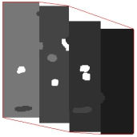
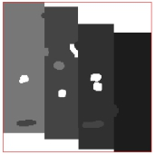
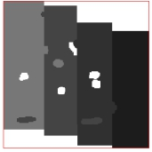
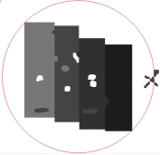
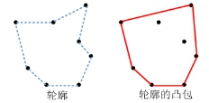
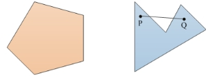
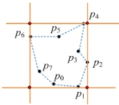

轮廓分析的主要任务是在已完成轮廓提取的前提下，对轮廓点集进行分析，以进一步获得轮廓的相关几何信息(凸包、与轴平行最小矩形、最小面积圆、最小面积矩形)，用于后续的图像分析和处理。其应用效果如图1所示。
 
 
| 分类 | 参数名称 | 参数描述 |
|---|---|---|
| 属性窗口 | 当前轮廓序号 | 输入分析的轮廓序号，取值范围0~轮廓链数量-1。 |
| 凸包轮廓方向 | 分为顺时针和逆时针两种形式。选择顺时针时，轮廓点按照顺时针排列；反之，按照逆时针排列。 | |
| 显示凸包轮廓 | 控制是否显示凸包轮廓。 | |
| 显示轴平行矩形 | 控制是否显示轴平行矩形。 | |
| 显示最小面积矩形 | 控制是否显示最小面积矩形。 | |
| 显示最小面积圆 | 控制是否显示最小面积圆。 | |
| 图像窗口 | 输入图像 | 显示待检测的图像。 |
| 数据链 | 输入图像 | 输入图像宽度、高度、像素大小，同图像窗口的输入图像参数。 |
| 轮廓信息 | 输入需要进行轮廓分析的坐标点集。 | |
| 高级界面 | 无 | 无 |
| 分类 | 参数名称 | 参数描述 |
|---|---|---|
| 监视窗口 | 输入图像 | 输出图像宽度、高度、像素大小。 |
| 轮廓数量 | 输出轮廓的个数。 | |
| 是否凸包 | 当前轮廓是否为凸多边形。 | |
| 凸包顶点 | 输出凸包的顶点坐标。 | |
| 轴平行矩形 | 输出轴平行矩形的左上角点和矩形的边长 | |
| 最小面积矩形 | 输出最小面积矩形的中心点坐标、x方向边长、y方向边长、旋转角度和切变角度。 | |
| 最小面积圆 | 输出最小面积圆的圆心和半径。 | |
| 执行结果 | 工具执行结果。 | |
| 执行时间 | 工具执行时间。 | |
| 图像窗口 | 输入图像 | 显示与振镜坐标相关联的图像，同监视窗口的输出图像参数。 |
| 凸包轮廓 | 显示凸包轮廓参数选择“是”时，显示凸包轮廓。 |
|
| 轴平行矩形 | 显示轴平行矩形参数选择“是”时，显示轴平行矩形。 |
|
| 最小面积矩形 | 显示最小面积矩形参数选择“是”时，显示包含所有轮廓点且面积最小的矩形。 | |
| 最小面积圆 | 显示最小面积圆参数选择“是”时，显示包含所有轮廓点且面积最小的圆。 | |
| 执行结果 | 显示工具执行结果，执行成功显示“OK”，执行失败显示“NG”，同监视窗口的执行结果参数。 | |
| 数据链 | 输入图像 | 输出图像宽度、高度、像素大小，同监视窗口的输入图像参数。 |
| 所有轮廓 | 输出满足预设条件的结果信息，供后序工具使用，同监视窗口的所有轮廓参数。 | |
| 轮廓链数量 | 输出每个轮廓链的坐标点，供后序工具使用，同监视窗口的轮廓链参数。 | |
| 轮廓总数 | 输出轮廓的总个数，同监视窗口的轮廓总数参数。 |
凸包是指包含所有轮廓点且面积最小的凸多边形，如图2所示。凸多边形与非凸边形是指凸多边形区域内任意两点之间的线段(包括边界点)均位于多边形区域内部，非凸边形则相反。如图3所示。


轴平行矩形指的是与轴平行的最小面积矩形，包含所有轮廓点且与轴平行的面积最小矩形，如图4所示。

无
参见“\Samples\轮廓分析工具.gvp”。